What is upscaling?
Like its name implies, upscaling is simply increasing the scale of something. More specifically, taking discrete information in a given scale and finding values between the existing samples. The easiest and most classic way of doing this is through simple linear interpolation, if you want to find a value between two points you can simply draw a line between them and linearly find any value in this line. If you wanted to find the value that's placed exactly in the middle of those 2 discrete points, you could simply do an arithmetic mean with their values to find your answer.
Linear interpolation can be done in a plane, through both axis, creating what we call "bilinear" interpolation. Bilinear interpolation is the simplest interpolation algorithm, easiest to calculate and also unironically the most used one in the industry due to the fact that it's extremely simple to implement.
But can something as simple as just drawing a line between 2 known discrete points give us good results? It depends entirely on how the original information looked like. We can however, increase the complexity of our upscaling algorithm by increase the amount of information it takes into consideration in order to find values between our discrete points. In this post we'll evaluate what we can do differently, how much better our results can get and how it affects our performance.
Polynomial interpolation

A relatively simple way of taking more information into consideration when finding values between discrete points is to use
more than just the information of 2 points to calculate a function that connects them. We can trace a polynomial
curve between points if we take into account the information of neighbouring elements, calculating the gradients
and therefore becoming able to connect them with curves instead of lines. The shape of the curve connecting points
depends on the windowing and scaling functions used.
Structural Similarity Upscaling


We can more precisely upscale something if we try to reconstruct strucutures, the most evident problem with linear or polynomial scalers is the thickening of border areas where the interpolated result doesn't transit between values as sharply, resulting in a blurrier image with "lost" detail in the strucutures if you're downscaling and then upscaling it back.
Convolutional Neural Networks
Another way of trying to "recover" lost information through upscaling is using neural networks that firstly go through a training phase so it can "learn" how to upscale. The training phase consists of analysing a set of images, and then setting parameters that will be used when upscaling. Note that upscaling isn't exactly recovering information, all we're doing is coming up with "new" information based on what we already have.
There are multiple different ways of using neural networks to upscale images, and there are multiple different algorithms that aim to do pretty much the same thing. To make it more practical, we'll stick to algorithms that can be easily tested as user-shaders using mpv, with the sole adition of the extremely popular Waifu2X, which will be used as our state of the art algorithm.
We'll test the following algorithms:
RAVU
Based on Google's RAISR, RAVU utilises its upscaling ideas but doesn't apply its post-processing. The algorithm learns convolution kernels from gradients and value intensities so it can interpolate the data more accurately than doing it using the same convolution kernel in every single window.
We can choose the radius of the upscaling window, a larger radius means that we take more information into account when learning our convolution kernels, and also that we take more information into account when upscaling each part of the image.
NNEDI3
NNEDI3 is the direct evolution of NNEDI2, and it was originally an intra-field only deinterlacing algorithm. It can however, upscale images utilising the same logic. We can vary the size of the window (a larger window takes more information into account) and the number of nerons (more neurons mean we learn things better, but the extra information makes upscaling slower).
FSRCNNX
Based on SRCNN, FRSCNN focus on being able to be used in real time without sacrificing quality. We can set the feature dimension, the number of shrinking filters and the mapping depth. Increasing the feature dimension increases quality, but decreases speed. Increasing the number of shrinking filters will increase performance, but will also potentially decrease quality.
Waifu2x
Inspired by SRCNN, this algorithm is too slow to be used in real time but it outputs results with high fidelity.
Testing methodology
Performance measurements were done upscaling an animation video encoded into AVC from 1280x720 to 2560x1440. Utilising mpv with a benchmarking profile, always scaling chroma with spline36 (all settings from profile=gpu-hq), fixing scalers that do half-pixel shifts, with Vulkan as the renderer and hardware decoding turned off. The machine used has an Ivy Bridge i5 3470, a Polaris RX 470 and user shaders were always compute shaders when possible.
Quality measurements were done in 2 test images, one from animation and another one from live action.
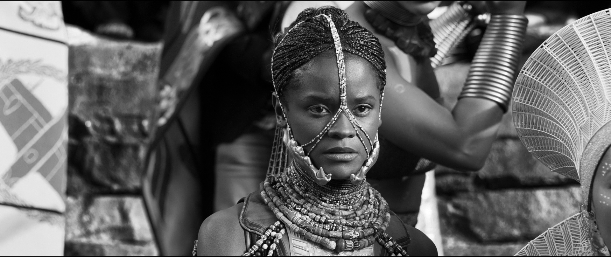
The reasoning behind this comes from the fact that the live action image has more high frequency components that are harder to "restore". In order to measure how "good" each algorithm is, firstly the test images were bicubic downscaled to a quarter of their original resolutions (0.5x scaling factor in both axes), and then upscaled back to their original resolutions with a direct 2x upscaling factor which prescalers usually are used for (2x in both axes creates a resolution that's 4x larger in pixels). Due to the fact that some scalers only work with YUV sources, to make it fair a relatively high quality YUV444 JPEG source was used for every single scaler. Note that using RGB24 PNGs with the algorithms that accept RGB sources would've been better, but also unfair.
Performance was evaluated simply in frames per second, while quality was evaluated in both SSIM and PSNR.
PSNR
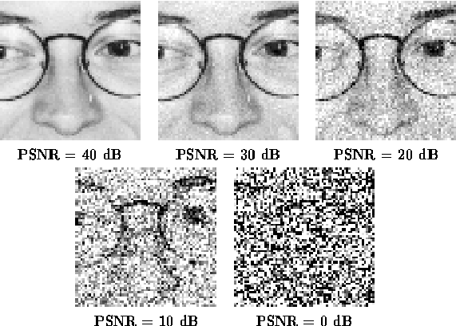Simply the peark-signal-to-noise ratio given in dB. We can measure how much noise there's in an image looking at this number.
SSIM
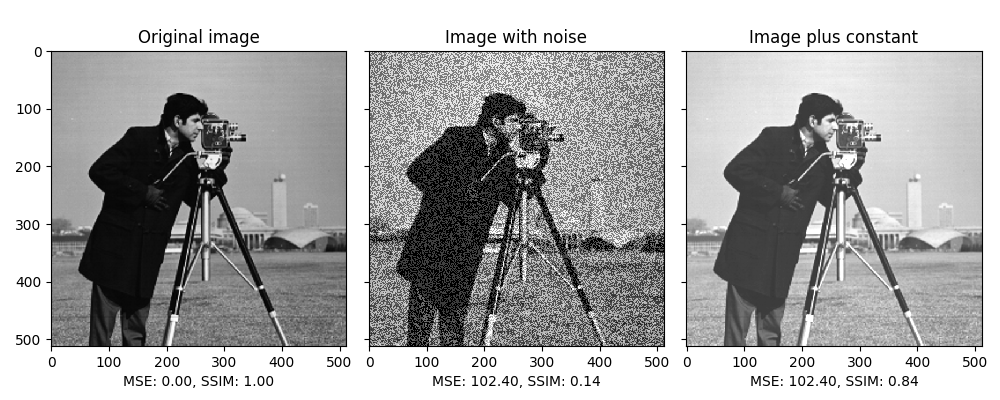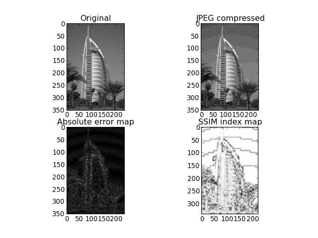
The structural similarity index tells us how close an image is to the reference giving more importance to how well structures are preserved, so it can represent better how humans perceive said images. Its practical difference when compared to measurements like MSE and PSNR is that contrast, colouring and luminance disparities don't affect the scoring as much as noise in the high frequency components.
Given our specific scenario, where noise is only added through upscaling, we expect a strong correlation between PSRN and SSIM.
Testing and results
The following image was used for the animation upscaling testing:

We can see the results below:
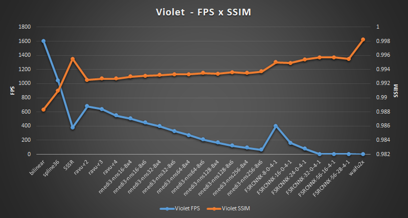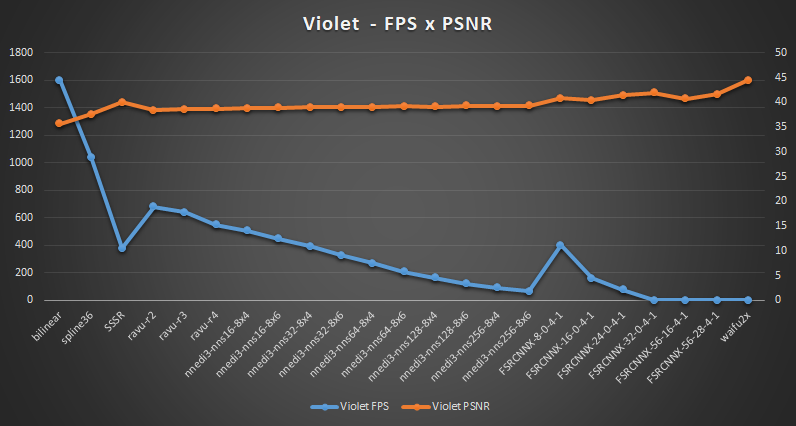
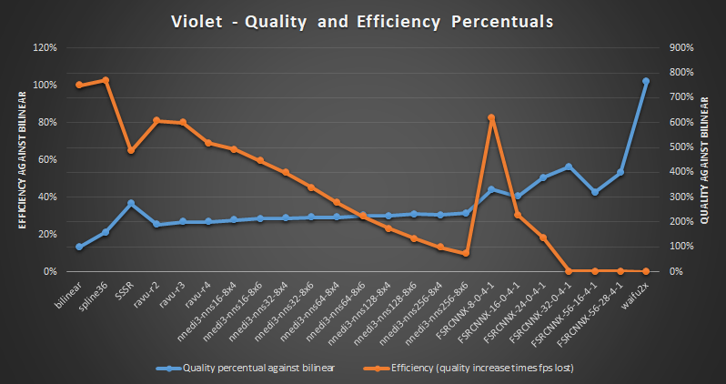
Or in a table format, for those who prefer to just look at the numbers:
We can also see how much closer to the reference our best tested scaler is compared to the worst scaler by looking at their SSIM maps:
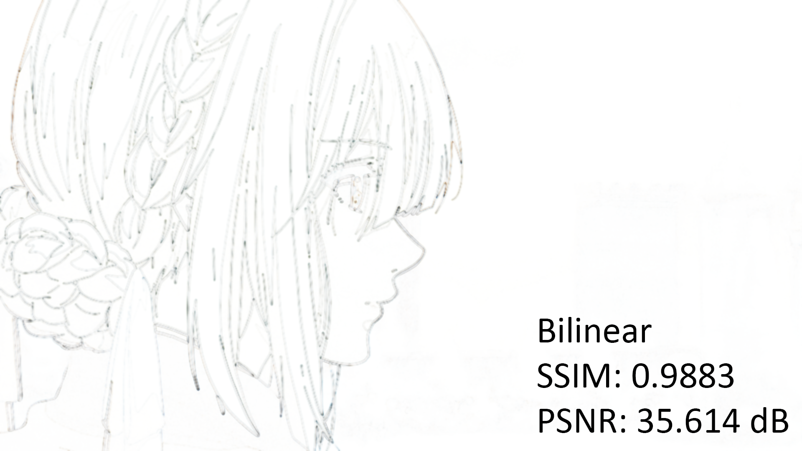
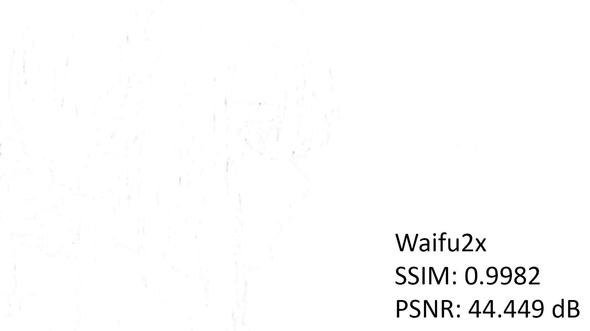
The following image was used for the live-action upscaling testing:

We can see the results below:
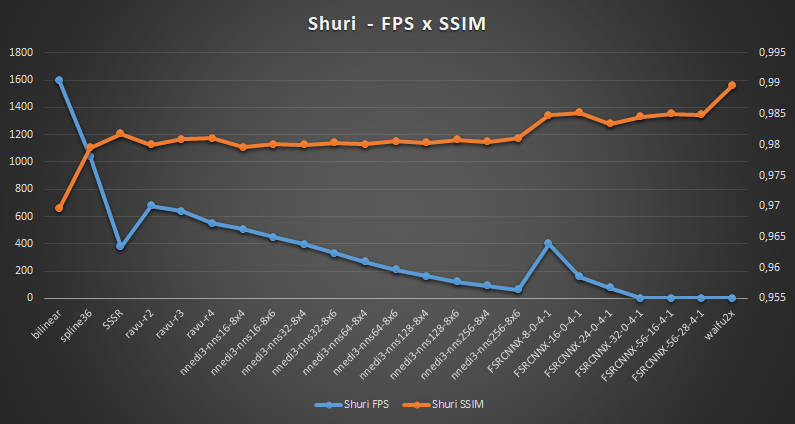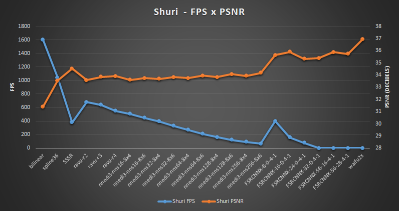
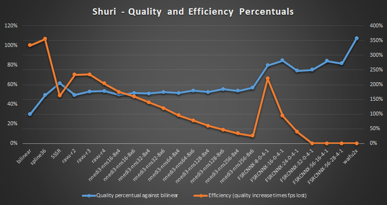
And again, a table:
The same beheviour can be seen in Shuri's SSIM maps, Waifu2x was much closer to the reference than bilinear:
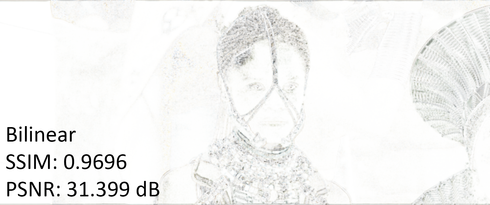
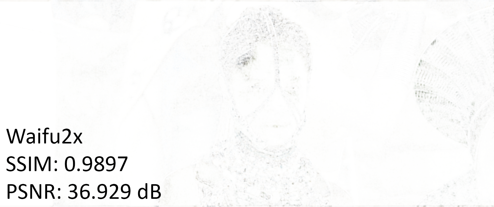
We can clearly see that in general, neural network based scalers tend to give better quality, though they're also more computationally expensive. SSSR however, does better than RAVU or NEEDI3, and only really gets beaten by FSRCNNX and Waifu2x.
We can also see that the performance drop from increasing the parameters in the neural network based scalers doesn't give us an equivalent quality increase, which was always to be expected. What's surprising though, is that according to the test spline36 appears to be more efficient than even bilinear itself (efficiency was measured by the framerate ration compared to bilinear times the relative quality increase over bilinear), though bilinear was probably bound by decoding speed. Still, we can clearly see that FSRCNNX_x2_8-0-4-1 is also extremely efficient for the image quality it outputs.